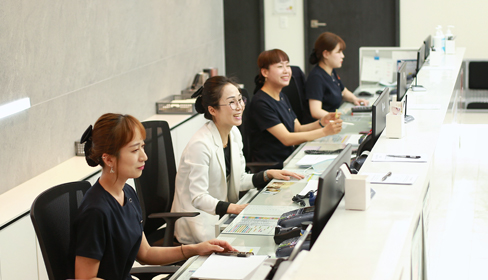
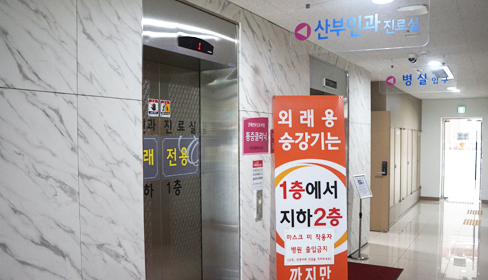

외래 진료 및 접수&수납 안내 (외래 전용 엘리베이터 이용)
외래는 지하1층에 있습니다.
외래 전용 엘리베이터를 타고 B1을 누르시고 뒤돌아 내리시면 됩니다.
- 비상 계단을 이용하시면 건강에 좋겠지요.
- 
- 
외래진료절차
산부인과의 모든 진료/검사, 접수/수납, 제증명서류발급 등 외래에서 one-stop으로 진행하고 있습니다. (응급인 경우, 3층 분만실로 이동합니다)
접수
대기
 진료 및 상담
진료 및 상담검사
수납
Ｏne-Stop
진료 시스템
01.접수 : 지하1층 외래 접수에서 이름, 생년월일을 말씀해주세요.
- 산모 : 산모수첩 제출
- 부인과 진료
- 통증클리닉 진료 : 외래에서 접수 → 지하2층 진료실로 이동
- 신생아 진료 : 설소대, 포경수술, 황달 검사 및 대사 이상 검사
02.대기 : 접수 확인 후 진료실 간호사의 호명이 있을 때 까지 대기해주세요.
- 단, 산모일 경우 초음파검사 후 진료
03.진료 및 상담 : 궁금한 내용은 의사선생님께 꼭 여쭤봐주세요.
- 진료한 의사선생님의 휴진일을 꼭 확인해주세요.
- 통증클리닉 진료 : 진료 본 후 → 지하1층 수납으로 오세요.
04.검사 : 의사선생님의 진료오더에 따라 필요한 검사, 주사가 있을 수 있습니다.
05.수납 : 진료비를 결제합니다. (카드/현금영수증은 본인 핸드폰번호로 자동 처리됩니다.)
- 약처방전을 받으신 후 가까운 약국에서 약을 구입합니다.
제증명서류 발급
대리처방은 아래의 경우에만 해당됩니다.
대리처방 수령 가능자 : 배우자, 직계가족 (대리인 신분증, 가족관계증명서)
- ① 환자의 의식이 없는 경우
- ② 환자의 거동이 현저히 곤란한 경우
- ③ 같은 질환에 대하여 계속 진료를 받아 오는 경우
- ④ 주치의가 안정성을 인정하는 경우 (의료인은 판단에 따라 대리처방을 거절 할 수 있음)
(의료법 제 17조의 2, 의료법 시행령 제 10조의 2, 의료법 시행규칙 제 12조의 2)